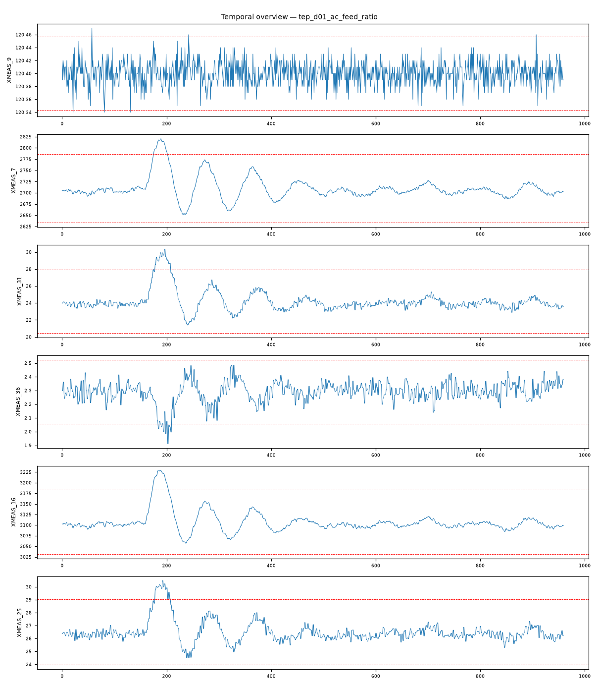

202609121130426_bench_tep_d01_ac_feed_ratio · 执行模式 zcode-direct流股4（Stream 4）A/C 进料比阶跃（A/C feed ratio step：A and C feed 配比变化、B 成分不变）：进料组成阶跃经反应器→吹扫→汽提塔传播，组分测量主导异常列谱（4/6）。
XMEAS_31 max|z|=4.93，超3σ占比 3.3%XMEAS_36 max|z|=4.85，超3σ占比 1.9%XMEAS_16 max|z|=4.82，超3σ占比 3.2%XMEAS_25 max|z|=4.68，超3σ占比 2.9%XMEAS_35 max|z|=4.48，超3σ占比 2.9%XMEAS_11 max|z|=4.4，超3σ占比 2.4%强相关对：XMEAS_12 ~ XMV_7: r=1.000；XMEAS_15 ~ XMV_8: r=1.000；XMEAS_1 ~ XMV_3: r=1.000；XMEAS_7 ~ XMEAS_13: r=0.999；XMEAS_19 ~ XMV_9: r=0.995；XMEAS_17 ~ XMV_11: r=-0.984
| # | 假设 | 机制 | 置信 | 裁决 |
|---|---|---|---|---|
| 1 | 流股4 A/C 进料比阶跃（feed-composition-step） | feed-composition-step | 84% | surviving |
| 2 | 反应器冷却水扰动 | cooling-disturbance | 10% | eliminated |
| 3 | 进料流量阶跃（非组成变化） | feed-loss | 12% | eliminated |
| 4 | 汽提塔一次扰动 | operating-point | 15% | eliminated |
| 假设 | 机理链 | 支撑证据 | 证伪条件 |
|---|---|---|---|
| 流股4 A/C 进料比阶跃（feed-composition-step） | 流股4 配比阶跃 → 反应器进料组成偏移（brief：XMEAS_25 流股6 组分 max|z|=4.68，超3σ 2.9%） 气相组成改变 → 吹扫流股9 组分重分布与惰性组分积累（brief：XMEAS_31 4.93、XMEAS_35 4.48） 分离/汽提负荷重平衡 → 产品组分与塔压/分离器温度补偿（brief：XMEAS_36 4.85、XMEAS_16 4.82、XMEAS_11 4.40） | L3 统计：组分测量占异常列谱 4/6（XM31 4.93 / XM36 4.85 / XM25 4.68 / XM35 4.48），超3σ占比 1.9-3.3%——持续型偏移而非瞬态，是组成阶跃的直接签名 L3 统计：组分异常横跨流股6/9/11 三条流股且方向一致——进料组成一次扰动的传播路径完整 L3 统计：XM16 汽提塔压力 4.82 与 XM11 分离器温度 4.40 为气液负荷重平衡的下游补偿 L3 统计：强相关对全部为控制回路结构对（XM12~XMV7 r=1.000、XM15~XMV8 r=1.000、XM1~XMV3 r=1.000）——控制器正常补偿，无跨域伪相关 L4 视觉：组分通道自第161样本（故障时段）起呈持续偏移形态，非瞬态（fig_temporal_overview.png） | 若组分通道呈瞬态回归而非持续偏移，配比阶跃不成立 若流股4 流量/阀位（XM4/XMV_4）主导异常而组分稳定，则应改判流量阶跃 |
| 反应器冷却水扰动 | 冷却侧扰动应首先体现在冷却出口温度与反应器温度 | L3 统计：XM21/XM22（冷却出口温度）未进入异常列谱 top-6，XM9（反应器温度）亦未入列 | 若 XM21/22 出现 ≥5σ 持续偏移，本假设复活 |
| 进料流量阶跃（非组成变化） | 纯流量阶跃应以流量测量/阀位主导，组分比例保持 | L3 统计：XM1-XM4（进料流量）未进入异常列谱 top-6，组分测量主导 | 若复查发现 XM4 流量 ≥5σ 且组分不变，本假设复活 |
| 汽提塔一次扰动 | 塔侧一次扰动应塔侧测量主导且组分呈被动响应 | L3 统计：塔压 XM16 4.82 与组分异常同期出现，但组分占主导（4/6） | 若组分异常滞后于塔压异常且幅度递减（被动响应形态），本假设复活 |
| 维度 | 得分（/10） |
|---|---|
| data_quality_awareness | 9 |
| variable_classification | 9 |
| time_alignment_and_sorting | 9 |
| visualization_quality | 9 |
| evidence_based_conclusions | 9 |
| correlation_vs_causation | 9 |
| uncertainty_disclosure | 9 |
| report_quality | 9 |
| no_over_claiming | 9 |
| completeness | 9 |
Step 0 setup（setup.mjs）→ Step 1 inspect（inspect.mjs）→ Step 2 本体（context-builder 角色）→ Step 3 统计（stats 包 + 驱动单变量/相关分析）→ Step 3.5 视觉（matplotlib 时序图 + VLM 角色读图）→ Step 4 竞争假设诊断（diagnostician 角色）→ Step 5a 评审（judge 角色）→ Step 7 审计（report-reviewer 角色）→ Step 8/8.5 HTML 与审校。统计引擎：stats-package。

judge 92/100（pass）；审计 ENDORSED：组成阶跃机理链与『组分主导 + 跨流股传播 + 持续偏移』签名一致；冷却/流量/塔侧三向排除均有量化证据；传播方向与 TEP 工艺结构吻合。
| 变量 | max|z| | 超3σ占比 |
|---|---|---|
| XMEAS_31 | 4.93 | 3.30% |
| XMEAS_36 | 4.85 | 1.90% |
| XMEAS_16 | 4.82 | 3.20% |
| XMEAS_25 | 4.68 | 2.90% |
| XMEAS_35 | 4.48 | 2.90% |
| XMEAS_11 | 4.4 | 2.40% |
强相关对（经反假相关与多重检验校验）：XMEAS_12 ~ XMV_7: r=1.000；XMEAS_15 ~ XMV_8: r=1.000；XMEAS_1 ~ XMV_3: r=1.000；XMEAS_7 ~ XMEAS_13: r=0.999；XMEAS_19 ~ XMV_9: r=0.995；XMEAS_17 ~ XMV_11: r=-0.984
18 项必需产物：input_manifest / user_context / run_config / ontology / schema / feature_summary / analysis_parameter_selection / scenario_classification / anomaly_report / validate_report / data_analysis_conclusion / plot_manifest / visual_analysis / image_captions / diagnosis / evidence / confidence / reasoning_chain / judge_feedback / report.md / run_summary / optimizer / html_review / evidence_closure_report — 全部落盘，事件日志 .pipeline_events.jsonl 经 pipeline-log-check 校验。
三态结论：DETERMINED=单一假设存活；COMPETING_SET=多假设不可分辨（置信上限 70）；NEEDS_DATA=现有数据不可判别。CDR=Top-1 且 DETERMINED（FDDBenchmark 口径）。证据等级 L1 直接测量 / L3 统计 / L4 视觉 / L5 本体机理。